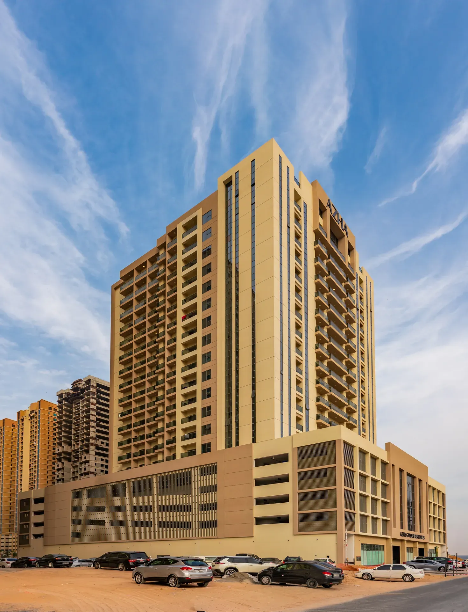
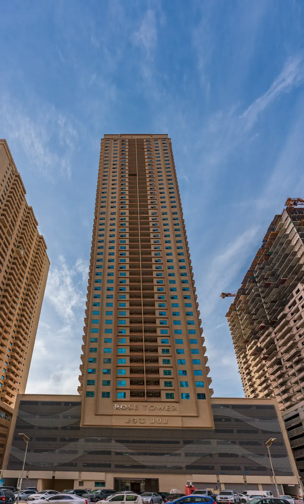

Lives.
Where Ajman lives — from the villas at Al Zorah to One 678, going up now at Aamra.


Also: Schools · Malls & shops — and one mosque.
Have a project in mind? Let’s talk.
Contact
Where Ajman lives — from the villas at Al Zorah to One 678, going up now at Aamra.


Also: Schools · Malls & shops — and one mosque.
Have a project in mind? Let’s talk.
Contact